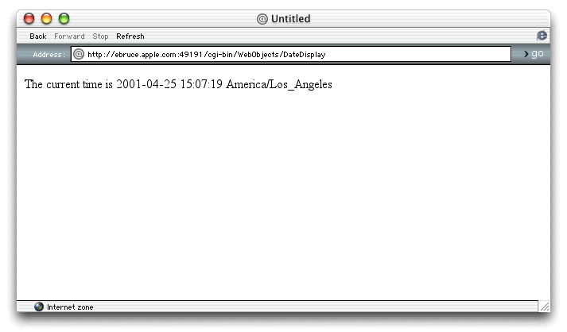

| PATH |

Now that you've customized the Main component, you can run the application and watch your logic in action.
Choose Build > Build and Run.
A page similar to the one in Figure 4-1 appears after Project Builder builds and starts your application.
Figure 4-1 What time is it?

© 2001 Apple Computer, Inc.